Gen 3: Pursuing Excellence
Chapter 8: The Road to Perfection
R&D, Optimizations, and Match Analysis
After facing the intense battles with Gen 2, we were thrilled by its progress but also recognized
its limitations in stability and heat dissipation during long tournaments. These "imperfections"
became the primary motivation for developing Gen 3.
This chapter details how Gen 3 underwent structural optimizations to address the core pain points of
Gen 2, and its performance in subsequent key competitions.
Core Objective: To build a faster, more flexible, and more stable all-around
competition machine and verify its performance in real-world matches.
8.1 Gen 3 Design: Core Improvements from Combat
Based on the issues exposed in competitions like the North China Regional, we established core design goals
for Gen 3, aiming for comprehensive performance superiority.
Gen 3 Design Goals
- Chassis Clearance Optimization: Eliminate friction between chassis gears and
Loading Beams for barrier-free passage.
- Triangle Zone Efficiency Boost: Optimize the aligner structure for faster response
times across different scoring scenarios.
- Stacking Stability Enhancement: Upgrade lower pin positioning from "point" support
to "surface" support to prevent toppling in high stacks.
- Refined Automation Workflow: Smooth out complex automated sequences like continuous
grabbing and stacking for higher reliability.
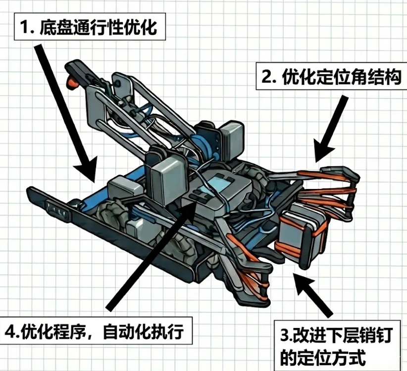
8.2 Mechanical Build: Chassis Optimization
1. Chassis Tuning: Gear Relocation
Modification: Moved the entire transmission gear assembly upward by one unit height.
Result: Completely eliminated physical friction between the chassis and the "Loading Beams."
Compared to Gen 2, Gen 3 moves through loading zones much more smoothly and quickly, saving precious seconds
during matches.
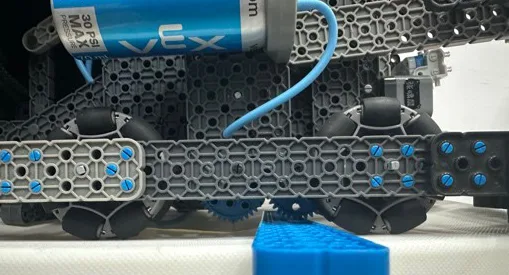
Old Chassis (Lower gear position)
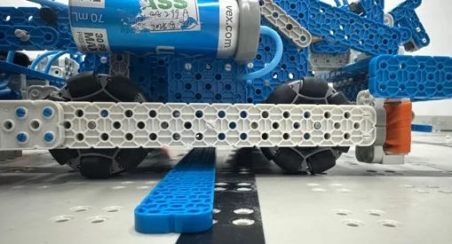
New Chassis (Gears relocated upward)
8.2 Mechanical Build (Cont'd): Aligner Optimization
2. Triangle Aligner: Semi-Retracted Structure
Modification: Changed the aligner from fully retracted to "semi-retracted" and swapped the
long pneumatic cylinders for short ones to reduce travel distance.
Result: Retained flexibility while significantly speeding up the aligner's response, making
scoring in the Triangle Zone much faster.
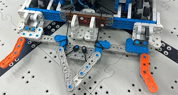
Triangle Aligner: Top View
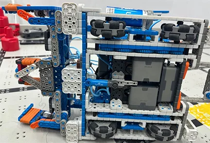
Triangle Aligner: Bottom View
8.2 Mechanical Build (Cont'd): Stacking Optimization
3. Stacking Structure: Surface Support
Modification: Upgraded the "point-based" support for securing lower pins in Gen 2 to a
"surface-based" support structure.
Result: The new structure secures the base pin much more firmly, drastically reducing the
risk of toppling due to robot movements or collisions during high-layer stacking, greatly improving
consistency.
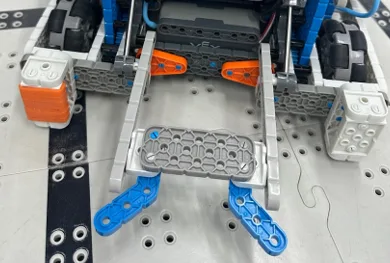
Gen 3: Surface-based Support
8.3 Programming & Automation: Pursuit of Fluidity
The mechanical optimizations of Gen 3 provided the foundation for more advanced automation. Our programming
focus was on integrating independent functions into a seamless "one-button" scoring system.
Core Software Upgrades
- Refined Triangle Zone Macros: Integrated the new "semi-retracted" aligners into faster
automated sequences for entry, scoring, and exit, minimizing driver burden.
- Optimized Continuous Stacking: Fine-tuned the lift's acceleration curves and flip
timing for high stacks, reducing idle time and making the process feel "all-in-one."
Training Results
After multiple rounds of testing, the Gen 3 automation reached the desired levels of stability and speed. The
success rate for continuous operations is significantly higher than that of Gen 2, especially under
high-pressure, fast-paced match simulations.
8.4 Training & Testing: Performance Leap
Gen 3 Training Log Summary
| Session |
Core Focus |
Issues Found |
Improvements |
Outcome |
| 1-3 |
Chassis & Beam Clearance |
Unstable grip, slow lift |
Added intake friction, tuned lift lever |
Smooth clearance, efficient grab/lift |
| 4-6 |
Triangle Scoring |
Slow aligner response |
Adopted semi-retracted structure |
Faster Triangle Zone operations |
| 7-10 |
High Stacking & Continuity |
Slight wobble in high stacks |
Tuned lift angles, tightened joints |
Improved precision and stability |
Gen 2 vs Gen 3 Core Metrics
| Metric |
Gen 2 |
Gen 3 |
Improvement Notes |
| Beam Clearance Time |
~2.5s |
~1.5s |
Relocated gears, zero friction |
| Triangle Efficiency |
Flexible but slow travel |
Semi-retracted, instant |
Short cylinders, tight code integration |
| Stacking Stability |
High |
Extremely High |
Surface support prevents toppling |
8.5 Beijing Inter-School League (1)
Tournament: 1st Beijing Inter-School League (2025-2026 Season)
Date: Oct 25 - Oct 26, 2025
Venue: USTB (Shahe Campus)
Goal: Qualify for the National Championship in Shanghai
I. Schedule
| Oct 25 |
13:00 - 14:30 Registration & Inspection
15:00 - 17:30 Meeting & Skills Matches
|
| Oct 26 |
08:00 - 08:30 Preparation
08:30 - 12:30 Qualifications
13:30 - 15:00 Finals
15:00 - 16:30 Awards Ceremony
|
II. Performance & Results
- Driving Skills: Scored 184 pts, excellent performance.
- Auto Skills: Scored 91 pts, a massive improvement.
- Final Rankings:
🏆 Skills Match Runner-up
🥉 Qualification 3rd Place
8.5 Beijing Inter-School League (2) Post-Match Analysis
This tournament not only secured our ticket to Nationals but also validated our Gen 2 upgrade strategy while
exposing critical process management flaws.
Summary (Post-Match Analysis)
1. Technical Validation: Gen 2 Shows Its Edge
We upgraded to the Gen 2 configuration right before the event with optimized routing.
- Tower Optimization: Target modifications for the High Tower improved accuracy to
nearly 100%.
- Efficiency: Structural tuning shaved 2-3s off total run time,
providing more buffer for complex moves.
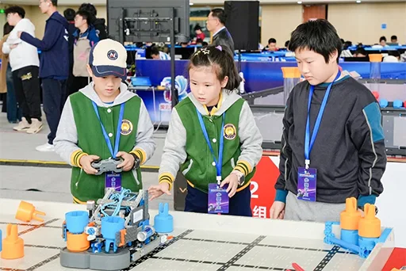
8.5 Beijing Inter-School League (3) Post-Match Analysis (Cont'd)
2. Alliance Strategy Evolution: Data Management
Learning from the past, we introduced a new "Alliance Log Sheet," boosting scouting
efficiency.
| Recording Metric |
Purpose |
| Teammate Motor/Chassis Data |
Evaluate speed/pushing power for role allocation. |
| Preferred Paths |
Predict path overlaps to avoid field collisions. |
| Historical Scores |
Select the best partner for the Finals based on data. |
3. Painful Lesson: Process & Mindset
Incident: Code Flashed in Reverse
Root Cause: Overconfidence. After a small tweak, we assumed it was simple and
skipped the test run before the match.
Result: Claw and hook movements were swapped. We lost the auto points and the
driver's confidence took a hit.
Corrective Action: Established a Golden Rule: "Every code change must pass a
test run on the robot before being locked."
8.6 Xicheng District Youth Competition (1)
Tournament: 2025 Xicheng Youth Robot Intelligence Competition
Date: Nov 2, 2025 (Afternoon)
Venue: BNU No.2 High School (Underground Gym)
Goal: Qualify for the Beijing Municipal Competition
I. Timeline
| 12:20 - 12:50 |
Team entry and inspection. |
| 13:00 - 17:30 |
Qualification Matches
Autonomous Skills Matches
|
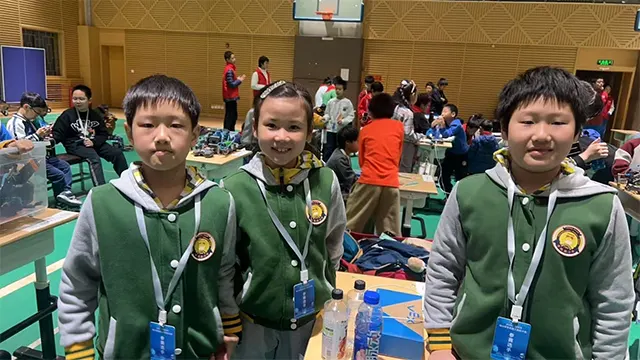
8.6 Xicheng District Youth Competition (2)
II. Performance
- Matches: Completed 6 qualification rounds.
- High Point: Partnered with Team Q59 for 302 pts (we contributed 194).
- Low Point: Partnered with Team Q83, scoring only 163 pts due to teammate error (they
contributed 2).
- Result: Stable performance, successfully advanced.
- Auto Skills: 91 pts. Errors in the second run led to sub-optimal
results.
- Environment: Total isolation and a signal blackout at the venue left the team feeling rattled at first.
III. Emergencies & Process Gaps
1. Scouting System Failure
Scouting efficiency collapsed, leading to one match where we couldn't find our teammate, forcing a
last-second strategy chat at the field.
| Root Problem |
Manifestation |
| ID Confusion |
The event used "Sort IDs" instead of Team Numbers (e.g., 2276A) for the first time. |
| Lagging Info |
Match lists were only posted on a wall, not handed out to teams. |
| Consequence |
Preparation time compressed by pinpointing teammates, many matches were won by luck rather than planning. |
8.6 Xicheng District Youth Competition (3)
III. Emergencies & Process Gaps (Cont'd)
2. Technical & Process Lessons
-
Mode Switching Accident:
Moving the robot from the flight case to the field for auto mode was clumsy and nearly delayed a
match.
→ Improvement: Optimize the staging and robot handling workflow.
-
Auto Stability:
Only 91 pts with errors.
→ Decision: Re-establish rigorous training for every auto segment; no more
"hoping for the best."
IV. Final Result
Despite the scares, our qualification performance was solid, and we successfully secured a spot in the
Beijing Municipal Competition.
8.7 Beijing Municipal Competition (1)
Tournament: 2025 Beijing Youth Robot Intelligence Competition
Date: Nov 15 - Nov 16, 2025
Venue: Beijing Institute of Technology (Liangxiang Campus)
Status: Highest-level youth robot event in the city
I. Timeline
| Nov 15 (Day 1) |
08:00 - 09:00 Inspection & Practice
09:00 - 09:30 Opening Ceremony
09:30 - 17:30 Qualification Matches
|
| Nov 16 (Day 2) |
09:00 - 09:30 Check-in & Prep
09:30 - 17:30 Remaining Quals & Skills
17:30 Departure
|
II. Performance
Qualifications: The High Points
Thanks to clear table assignments and excellent staging prep, our performance was top-tier.
- Max Score: 310 pts (Partnered with
Sanlihe Elementary).
- Min Score: 186 pts (Partnered with Chen Jinglun Branch).
- Ranking: Secured 1st Place in the Elementary Division for
Qualifications.
8.7 Beijing Municipal Competition (2)
II. Performance (Cont'd)
Skills Match: The Dark Hour
Double Failure
1. Wrong Program: Selected the wrong code slot for the first run, resulting in 0
points.
2. Panic: The first failure led to severe anxiety on Day 2, causing mechanical handling
errors.
Final Result: 3rd Prize
Despite ranking 1st in Qualifications, the massive failures in Auto Skills dragged down
our total score. We ended with a 3rd prize—a painful reminder of the "Weak Link" effect.

8.7 Beijing Municipal Competition (3)
III. Deep Dive & Lessons
1. Systematic Failure in Auto
Crashing in auto across three major events (North China, Xicheng, Beijing) pointed to deeper issues:
- Lack of Training: Auto was undervalued and became the team's "Achilles' heel."
- Chaos in Process: Team roles weren't strictly followed at the field, leading to
collaboration errors.
- Rough Details: The "Switching" process and Pin placement lacked
precision, affecting the robot's trajectory.
2. Mechanical Risks Found
- Part Loss: In two matches, the robot dropped Pins during the "lift-flip" sequence.
- Countermeasure: Need to immediately check intake grip strength and lift stability.
Psychological Resilience:
On a positive note, despite the Day 1 skills failure, the team bounced back to dominate the Day 2
Qualifications. This mental "rebound" was a valuable takeaway.
8.8 VEX Asia Open International Signature Event (1)
Tournament: 2025-2026 VEX Asia Open International Signature Event
Date: Dec 18 - Dec 21, 2025
Venue: Shougang Park, Beijing
Nature: International Signature Event
I. Schedule
| Dec 18 |
Registration & Inspection |
| Dec 19 |
Practice, Quals, Skills |
| Dec 20 |
Quals / Skills |
| Dec 21 |
Finals |
II. Performance
As the final major event of the season, our goal was to test Gen 3's limit. However, the journey was
rocky, exposing issues in stability under high pressure.
8.8 VEX Asia Open (2)
III. Core Issue: Triangle Scoring Instability
1. Failure & Temporary Fixes
We repeatedly faced "Triangle errors and unstable claw height." Automated paths failed,
leading to missed scoring opportunities.
- Root Cause: Post-match analysis showed imprecise variables for lift height.
- Quick Fix: The driver had to manually compensate for the angle, costing
2-3s per operation.
- Field Adjustments: We boosted the lift height variable (`PIN=5`) by 3 degrees,
which helped but didn't solve the underlying issue.
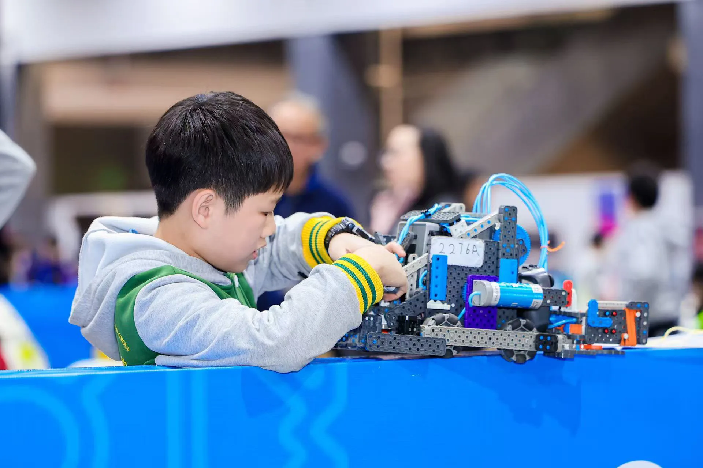
8.8 VEX Asia Open (3)
2. Quals & Finals Performance
Affected by the Triangle issue, our 8 qualification rounds were a rollercoaster:
- High Point: Scored 374 pts (top of the field) when the issue was
manageable.
- Low Point: Scored only 132 pts in Q148 due to our errors and teammate pathing
issues.
- Finals Regret: A teammate accidentally pushed a beam into our zone, blocking our
dual-color pins. We lost 34 points and ended with 217 pts.
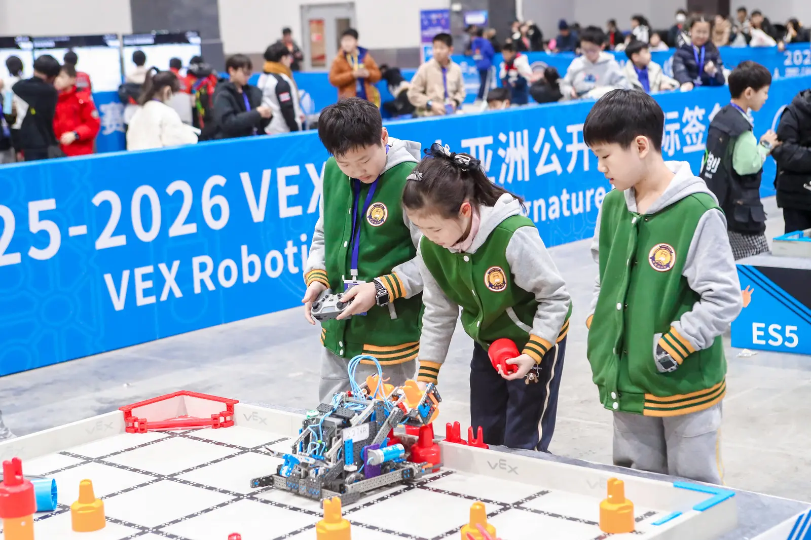
8.8 VEX Asia Open (4)
IV. Skills & Final Results
Skills Match
- Auto Skills: 201 pts (Perfect Score), validating our code stability.
- Driving Skills: 173 pts, decent but with room for growth.
- Ranking: Ranked 5th Overall in Skills.
🏆 Award: Think Award
The judges highly praised our rigorous testing and debugging process for the automated programs, awarding us
the "Think Award."
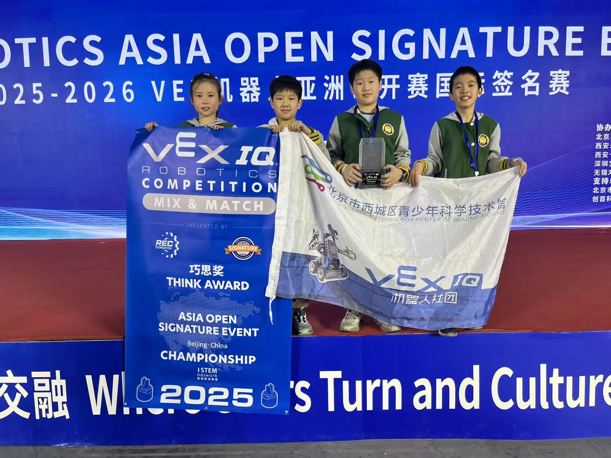
8.9 Comparison of Scoring Strategies (1)
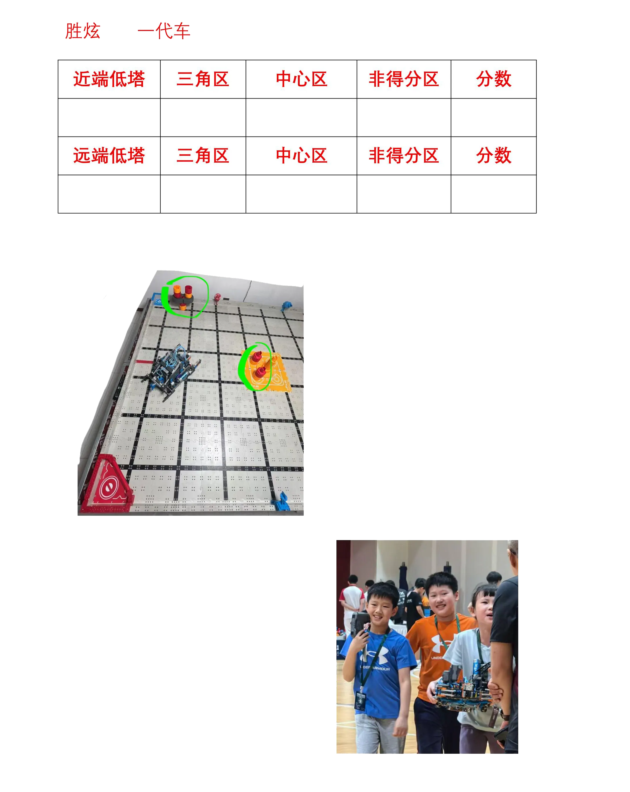
8.9 Comparison of Scoring Strategies (2)
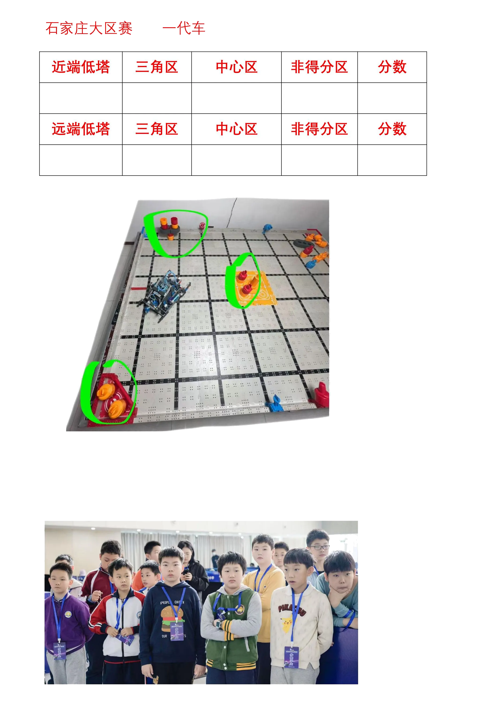
8.9 Comparison of Scoring Strategies (3)
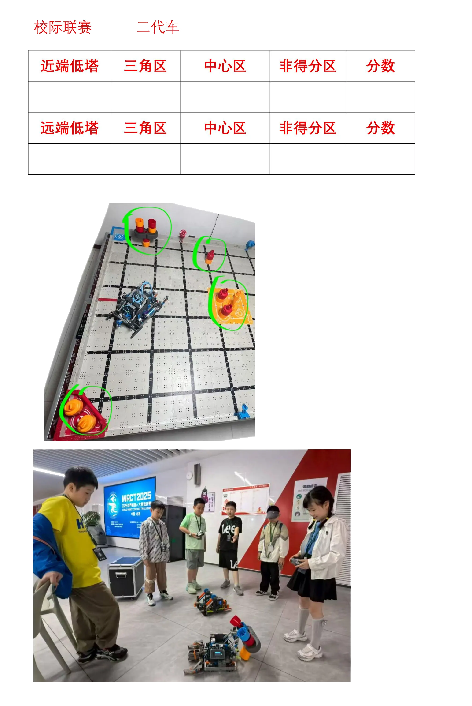
8.9 Comparison of Scoring Strategies (4)
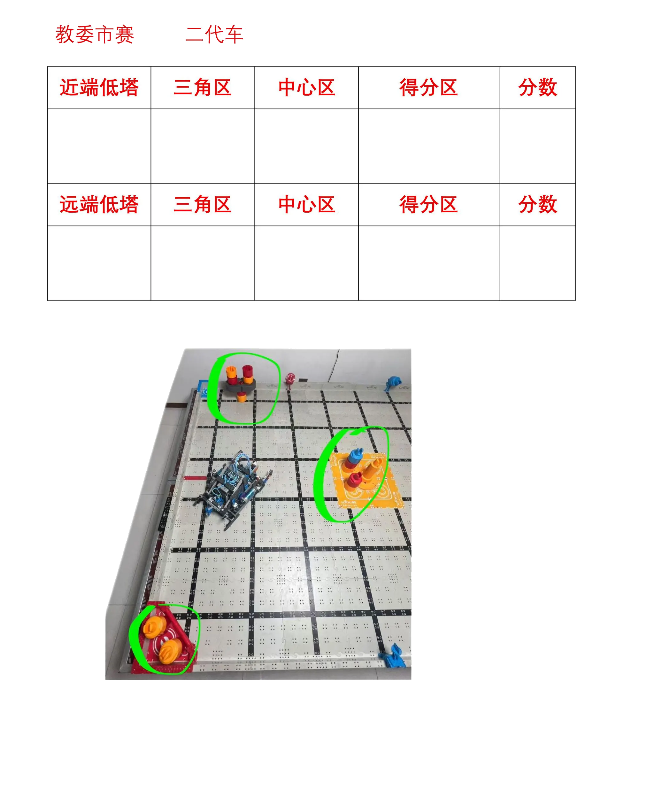
8.9 Comparison of Scoring Strategies (5)
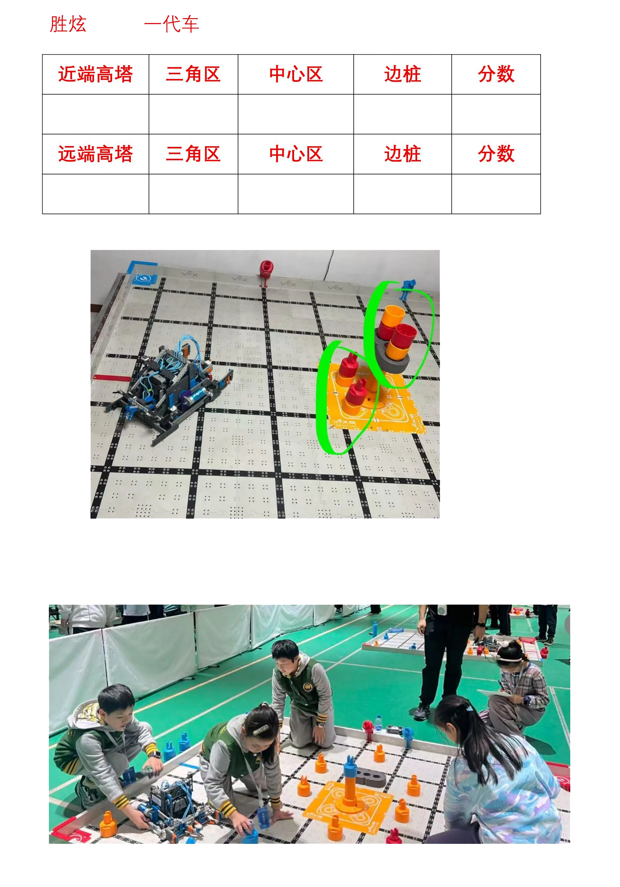
8.9 Comparison of Scoring Strategies (6)
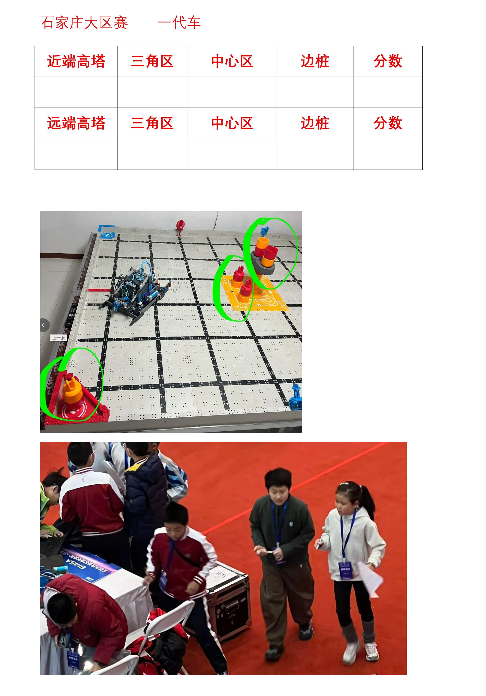
8.9 Comparison of Scoring Strategies (7)
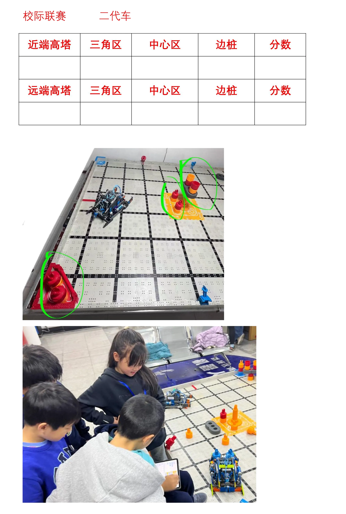
8.9 Comparison of Scoring Strategies (8)
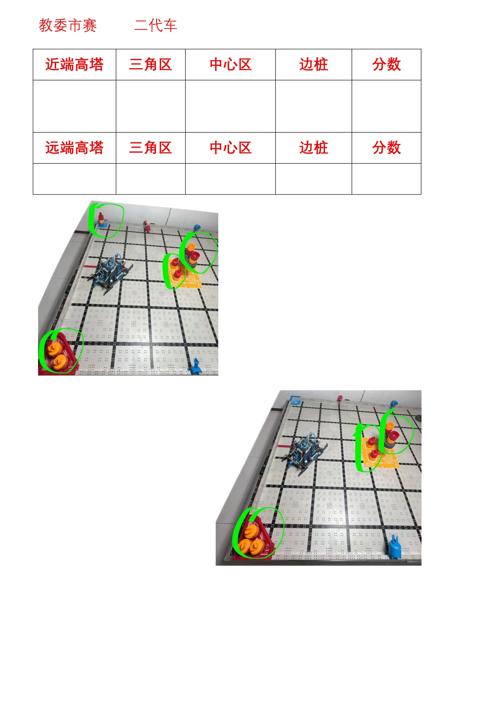
8.9 Comparison of Scoring Strategies (9)
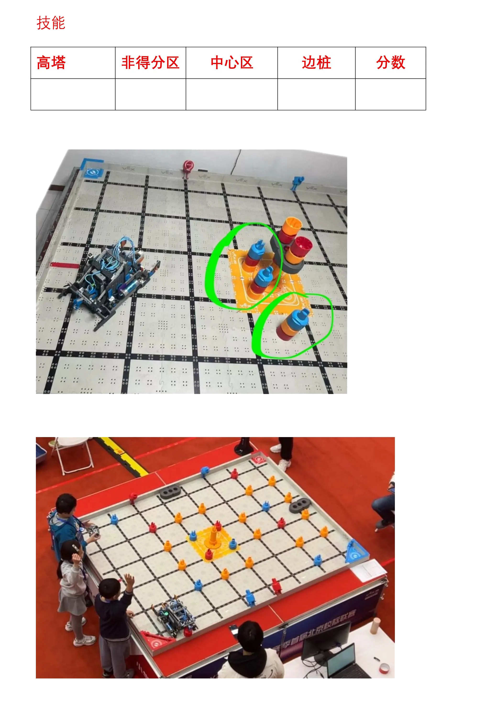
8.10 Season Summary: Towards a New Journey
From Imperfection to Excellence
Looking back at the season, from the initial exploration of Gen 1 to the battlefield trials of Gen 2, and
finally to the maturity of Gen 3, every step was full of challenges and growth. The "imperfections" of Gen 2
exposed our weaknesses, but those same weaknesses guided the R&D for Gen 3, ultimately leading us to the
podium.
Future Outlook
The VEX competition is endless, and technical iterations never stop. While celebrating our victories, we are
already thinking about the next generation of machines.
- Stronger Resilience: Future matches may be more aggressive; we need to enhance the
robot's structural impact resistance.
- Smarter Automation: We aim to introduce advanced sensors (like Vision) to allow the
robot to autonomously identify field elements.
- Modular Design: Explore more modular systems to quickly swap functional components
based on different field conditions.
Continuous improvement, never stopping. The journey of 2276A continues.